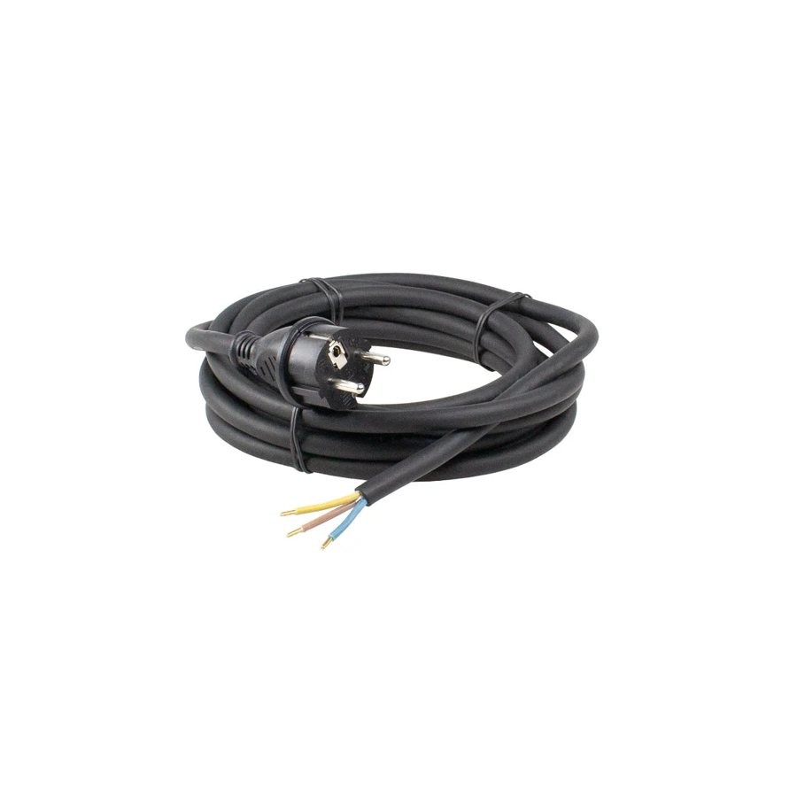
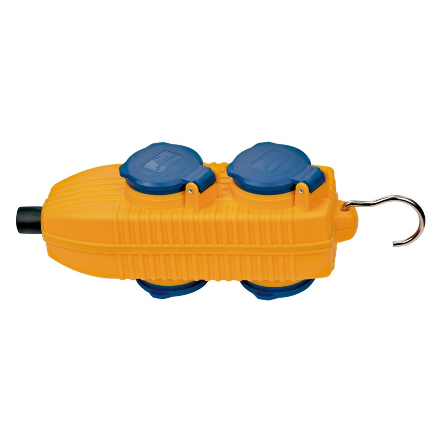
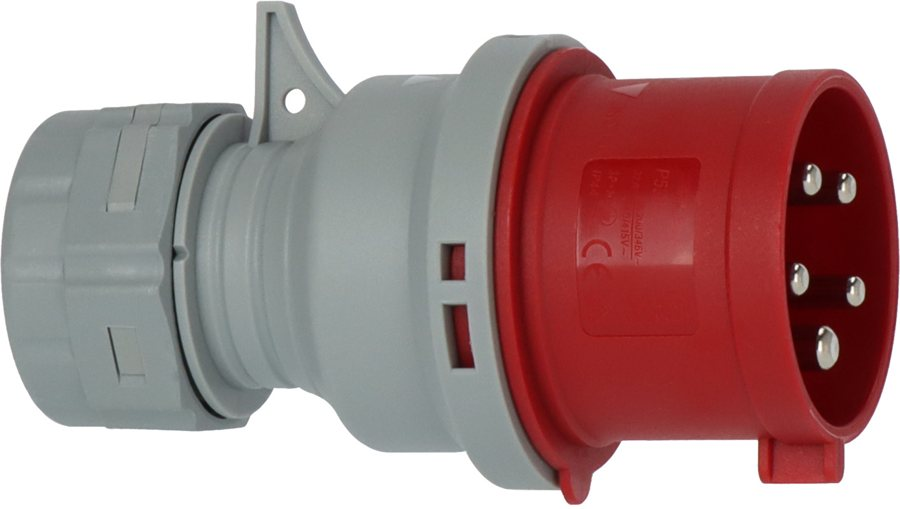
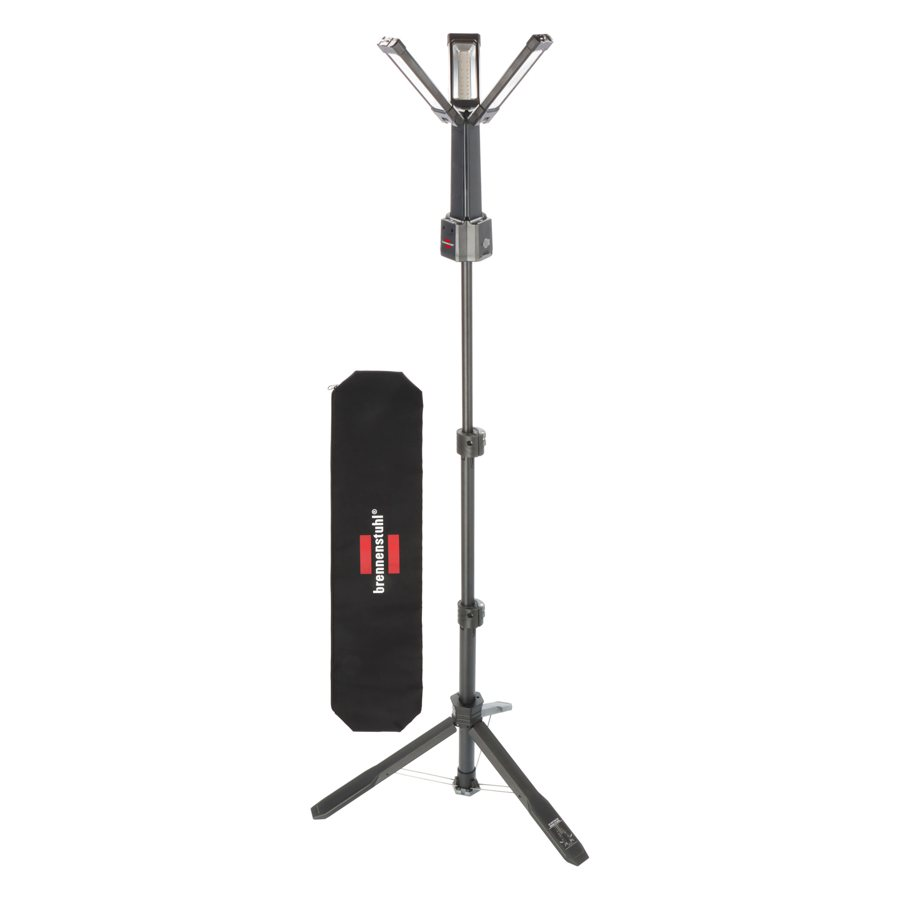
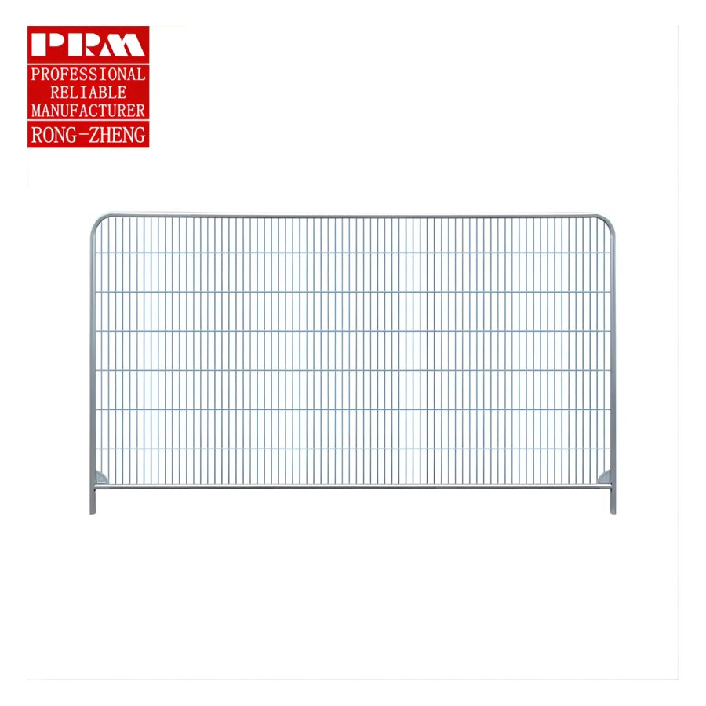
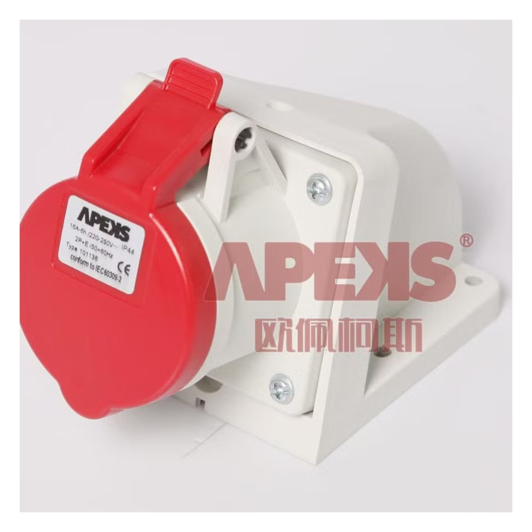
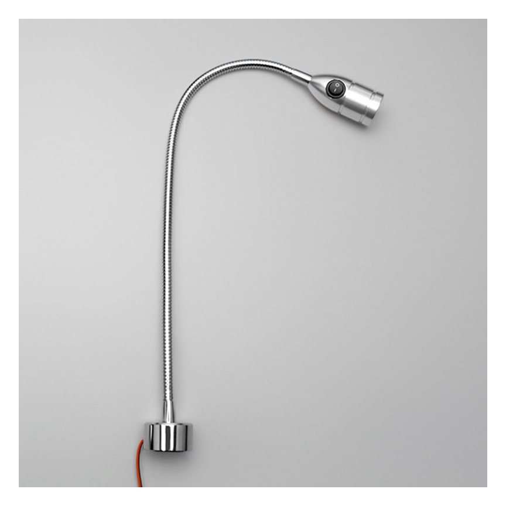
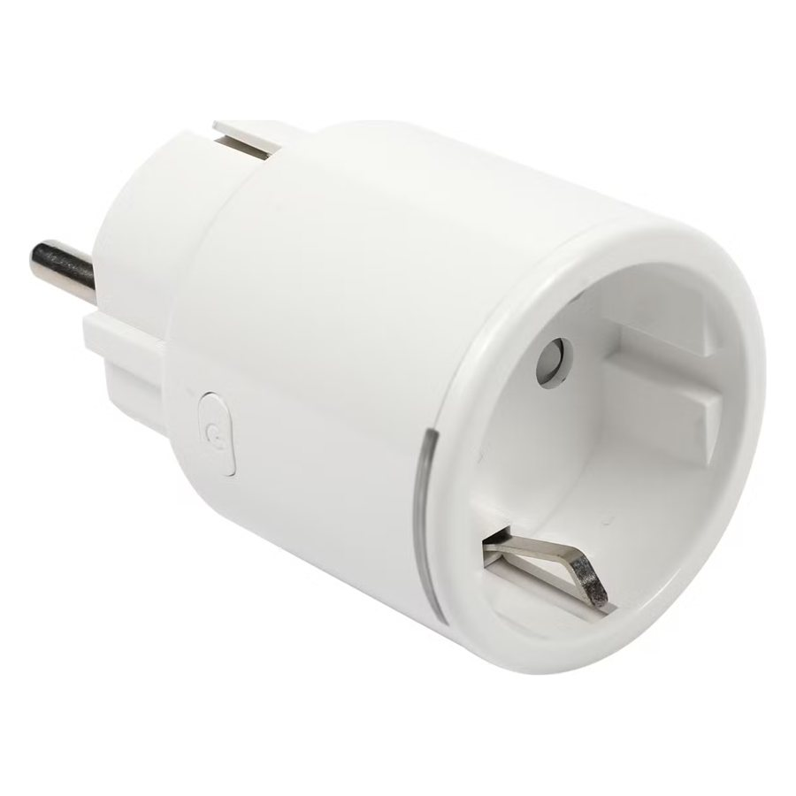
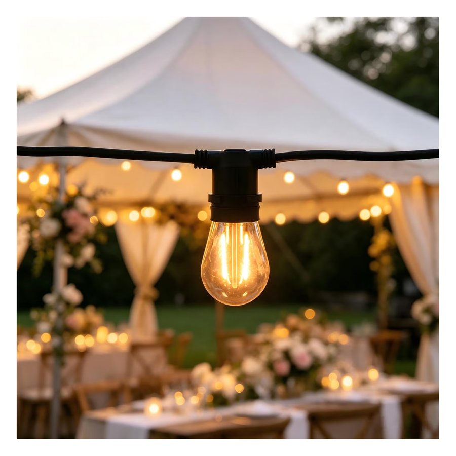

Home / Site power & lighting / LED work light / flood light 100 W with tripod stand

Illustration similar – shows the product type.
Site power & lighting
LED work light / flood light 100 W with tripod stand
Impact-resistant LED floodlight on a tripod for even, low-flicker work light during strip-out, demolition and interior fit-out.
The LED site floodlight on a tripod provides glare-free, even work light for strip-out, demolition and interior fit-out wherever no permanent lighting exists. Professional users in Germany expect an impact-resistant aluminium housing rated IP65, a stable height-adjustable tripod and an H07RN-F connection cable with earthing-contact plug.
Technical data
| Rated power | 100 W |
|---|---|
| Luminous flux | approx.; 7,500-10,000 lm |
| Colour temperature / CRI | 5,000-6,500 K / Ra ≥ 80 |
| Degree of protection | IP65 |
| Impact resistance | IK08 |
| Mains connection | 220-240 V ~, 50 Hz, H07RN-F 3G1.0, Schuko |
| Tripod height | approx.; 1.0-1.8 m |
| Service life | ≥ 30,000 h (L70) |
| Customs tariff number (HS) | 940542 |
EU standards and regulations
EN 60598-1Luminaires - General requirements and testsEN 60598-2-5Luminaires - Particular requirements for floodlightsEN 62471Photobiological safety of lamps and lamp systemsEN 55015Radio disturbance of lighting equipment (EMC)EN 60529Degrees of protection provided by enclosures (IP code)EN 62262Degrees of protection against external mechanical impacts (IK code)2014/35/EU + 2014/30/EUCE marking: Low Voltage and EMC Directives(EU) 2019/2020Ecodesign regulation for light sources and separate control gearElektroG / 2012/19/EUWEEE registration with stiftung ear
Goes well with

More products in this category

Rubber flexible cable H07RN-F 3G2.5 mm²Heavy-duty rubber-sheathed cable for mobile power supply on construction sites, outdoors and in wet conditions.

Site cable reel 25 m, H07RN-F 3G1.5, IP44

CEE cable reel 400 V, 25 m, H07RN-F 5G2.5, IP44Three-phase cable reel with CEE plug and CEE socket for dehumidifiers, extraction units and machines on site.

Site power distribution board 32 A CEE with RCD/MCB, IP44Pre-wired site distribution board with 32 A CEE supply, RCD and circuit-breaker protection for all outlets on site.

Socket cube (distribution cube) 4-way Schuko, rubber, IP44, 16 AMobile rubber distribution cube with four Schuko sockets for hand tools, lamps and extraction units at the workplace.

CEE industrial plug 16 A, 5-pin (3P+N+E), 400 V, IP44Compact 5-pin CEE plug for smaller three-phase loads, extension leads and cable reels on site.

CEE industrial plug 32 A, 5-pin (3P+N+E), 400 V, IP44Rugged 5-pin CEE plug for the three-phase connection of site distribution boards, dehumidifiers and extraction units.

CEE industrial plug 63 A, 5-pin (3P+N+E), 400 V, IP67Watertight 63 A CEE plug for sub-distribution boards, site cranes, hoists and concrete pumps on large sites.

CEE industrial plug 125 A, 5-pin (3P+N+E), 400 V, IP67Heavy-duty 125 A CEE plug for main boards, mobile generators and the supply of large construction sites.

Schuko rubber plug and coupling 16 A, 230 V, IP44

Cordless LED work light 20 W, 2,000 lm, IP54, with standMains-independent Li-ion rechargeable work light for basements, shafts and demolition areas without site power.

LED strip 24 V, IP65, 5 m roll (site lighting strip)

CEE adapter 16 A (5-pin, 400 V) to 1x Schuko 230 V, IP44Adapter plug from a three-phase CEE outlet to one Schuko socket: turns the 400 V site outlet into a 230 V socket for hand tools and lights.

CEE coupling (in-line female socket) 16 A, 5-pole (3P+N+E), 400 V, IP44Counterpart to the CEE plug: robust 5-pole coupling for assembling extension leads and cable reels with H07RN-F.

COB LED work light, USB rechargeable, foldable with magnet and hookFlat, foldable cordless hand lamp with COB strip, magnetic foot and hook for assembly, inspection and workshop use.

Extension cable Schuko IP44, 10 m, H07RN-F 3G1.5 (site extension lead)Ready-made 10 m rubber-sheathed cable with Schuko plug and IP44 coupling for site, workshop and outdoor use.

Barrier board red/white, plastic, 2,000 x 1,000 mm (site barrier)Lightweight, stackable plastic barrier board for construction sites, civil works and events, optionally with red/white reflective film.

Mobile construction fence 3.5 x 2 m, hot-dip galvanised (fence panel, foot and clamp as accessories)Galvanised 3,500 x 2,000 mm fence panel of tube frame and welded mesh for fast, foundation-free securing of sites and events.

CEE wall socket 16 A, 230 V, IP44, surface-mountedBlue CEE socket for fixed mounting on site boards and walls.

DIN-rail single-phase energy meter 230 V, MID, RS485Single-phase DIN-rail meter for sub-boards and site power billing.

LED gooseneck work light with magnetic baseFlexible magnetic lamp for machines and workbenches.

Plug-in energy monitoring socket 16 A, 3,680 WPlug-in socket measuring consumption of connected devices.

Rechargeable LED headlamp, USB, motion sensorRechargeable headlamp with COB flood light and sensor.

Rubber cable protector 5-channel, heavy dutyMulti-channel cable protector for pedestrian areas.

LED jobsite festoon string, daisy-chainableDaisy-chainable string light for sites and halls.